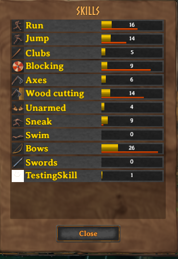

Custom skills
Creation of custom skills is done through the SkillManager singleton, by specifying a SkillConfig.
This can be done in two ways:
- Through a JSON file, using AddSkillsFromJson
- Through code, using AddSkill
The two approaches can both be used at once, and can be mixed as you see fit.
Note: By default, unless you actually have any levels in your skill, it won't show up in the skils menu. You must first raise your skill (either using a command, or actually implementing a way to earn levels) in order to be able to see it
SkillConfigs
Custom skills are created by providing a SkillConfig object.
The only required field on this object is the Identifier, and all other fields are optional.
Make sure that the Identifier you provide is unique, and will not change.
The saving/loading of skills on a user's save depends on the SkillType Jotunn generates from the Identifier provided, so if you change the Identifier, the skill will be saved differently.
For more info, check out the SkillConfig page.
Localizing skills
When creating skills, it's entirely up to the mod developer if they wish to create localizations for their skills or not.
If you wish to create a skill that does not have localization, you can just set the Name and Description fields in your skillconfig to exactly what you'd like them to be in-game:
SkillConfig skill = new SkillConfig();
skill.Name = "My testing skill";
skill.Description = "A nice testing skill!";
// ... other fields
If you wish to create localizations, then you will need to set the Name and Description fields to a unique token containing no spaces, starting with a $.
his can be done like so:
SkillConfig skill = new SkillConfig();
skill.Name = "$skill_test";
skill.Description = "$skill_test_desc";
// ... other fields
Now, these unique tokens can be localized exactly the same as you would for items, pieces, or anything else. Refer to the localization tutorial for a detailed guide on how this process works.
Examples
This is what our finished product should look like in-game:

Adding skills through JSON
First, we must create a JSON file which will keep an array of all the skills we wish to add. This JSON file should contain an array of SkillConfig objects (note, this must be an array). This can be done like so:
[
{
"Identifier": "com.jotunn.testmod.testskill",
"Name": "$skill_test",
"Description": "$skill_test_desc",
"IconPath": "TestMod/Assets/test_tex.jpg"
},
{
"Identifier": "com.jotunn.testmod.anotherskill",
"Name": "Another Test Skill",
"Description": "A test skill that does not use localization"
}
]
Next, we need to tell Jotunn where our JSON file is. If the JSON file is not in an AssetBundle, we can load it like so:
private void Awake()
{
// Test adding a skill with a texture
SkillManager.Instance.AddSkillsFromJson("TestMod/Assets/skills.json");
}
Finally, if we want to use a reference to our skill for anything in our mod, we can get its SkillType by using GetSkill with the skill's Identifier:
public static Skills.SkillType TestSkillType = 0;
private void Awake()
{
// Test adding a skill with a texture
SkillManager.Instance.AddSkillsFromJson("TestMod/Assets/skills.json");
// Get TestSkill SkillType, then we can use it raise skills, etc.
TestSkillType = SkillManager.Instance.GetSkill("com.jotunn.testmod.testskill");
}
Adding skills through code
This example requires assets to be loaded.
To create a new skill, you must call the AddSkill method.
This should be called from within your mod's Awake method, and it will return a randomly generated SkillType for your new skill.
public static Skills.SkillType TestSkillType = 0;
private void Awake()
{
// Test adding a skill with a texture
Sprite testSkillSprite = Sprite.Create(testTex, new Rect(0f, 0f, testTex.width, testTex.height), Vector2.zero);
var skill = new SkillConfig();
skill.Identifier = "com.jotunn.JotunnModExample.testskill";
skill.Name = "TestingSkill";
skill.Description = "A nice testing skill!";
skill.Icon = testSkillSprite;
skill.IncreaseStep = 1f;
Skills.SkillType TestSkillType = SkillManager.Instance.AddSkill(skill);
}
Interacting with our skill
From here, we can then use the TestSkillType to interact with out skill.
For example, we can raise our skill's level on keypress.
To do this, we can listen for keypresses in our Update() method.
private void Update()
{
if (Input.GetKeyDown(KeyCode.F8))
{
Player.m_localPlayer.RaiseSkill(TestSkillType, 1);
}
}